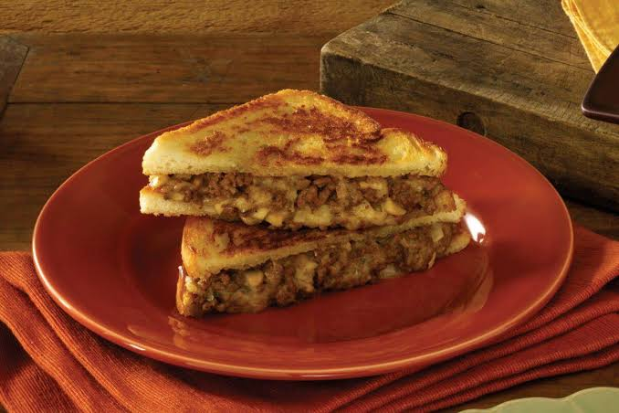
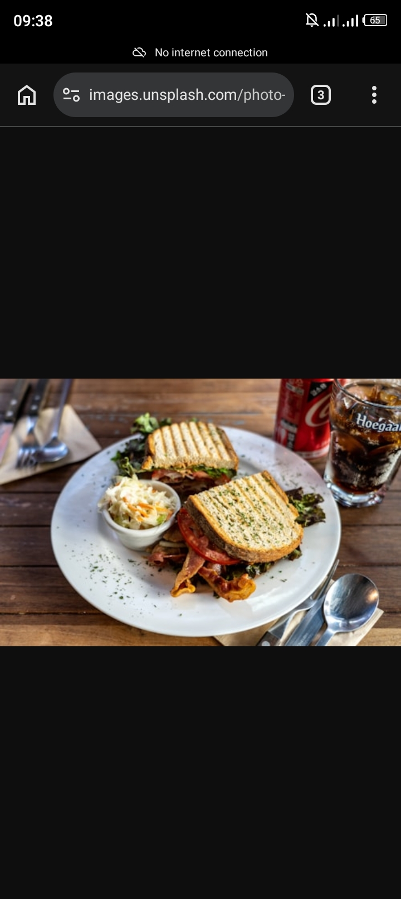
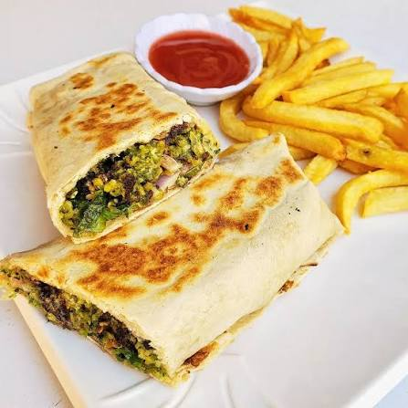
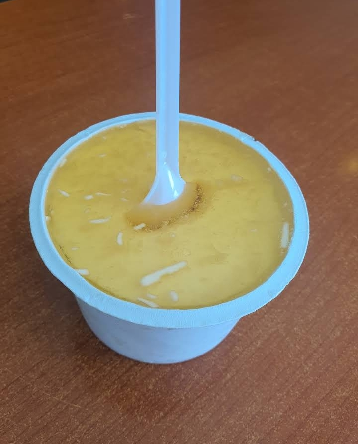
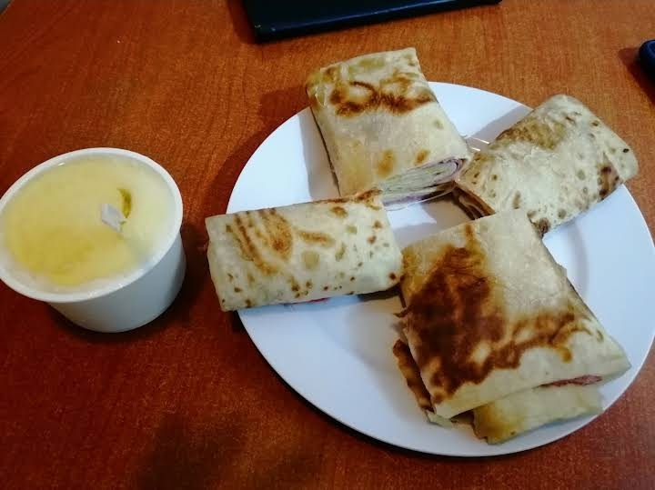

Choose Tsega Milk for its famous homemade yogurt and round-the-clock service. It operates a local restaurant alongside its own dairy farm.
They serve ultra-fresh milk products and thick,
traditional yogurt straight from their farm.
Beyond dairy, you can order hearty meat and cheese wraps.
Popular favorites include the Tsega Special Beef
and beef-with-cheese wraps.
We focus on customer satisfaction and healthy products.
The principles that guide Tsega Milk.
The company moves milk quickly from local farms to stores.
This rapid supply chain prevents the milk from spoiling.
It also lowers the number of bacteria that naturally grow when milk sits at warm temperatures.
Tsega Milk tests its milk to check for high nutrition and cleanliness.
Quality testing prevents the addition of extra water and ensures the milk has high fat and protein levels.
These exact tests help the milk get a "Grade A" ranking.
The company listens to the local community.
They adapt their services to meet buyer needs.
This means making sure that milk is always easy to find and that stores always have fresh,
cold products ready to sell.

